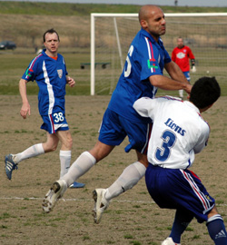
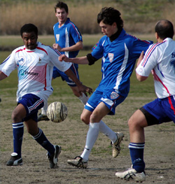
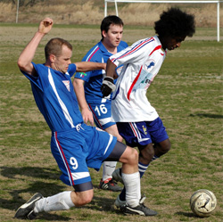

|
Misato, Sun 28th Jan. Clearly from the start of this game we could see who was more up for it, or should I say ready for the kick-off time. While Vags lined up for the kick-off, the Lions had maybe 7 players on the pitch while the others casually changed on the sidelines without any sign of panic or look as though they were in a rush. Eventually kick-off occurred a little over 5 minutes later than the original time with Lions finally having 8 players on the pitch, giving the referee the chance to air his whistle for the first time of the match.

Vags started most brightly and had chances through youngster Alex who was really enjoying the lack of pace in the Lions back four. On one occasion he had done the hard work by rounding the keeper (which was a sign of things to come) but his shot on his un-favoured left foot beat the defender on the line and also the left upright from 6 yards. The next time Alex rounded the keeper (you’re getting the jest of the game now), he again had a goal gaping but the finish lacked power and a Lions defender swept the ball off the goal line.
Next, the predictable happened yet again for the Vags. Despite Richards uplifting pre-match team talk in which he spoke of going a few goals in front before trying anything fancy and allowing some changes in personnel, we fell behind. I’m not sure who to blame because I just saw the final shot hit the net but it looked like a good finish from just outside the area which beat the on-rushing Taylor. However, it wasn’t long before Vags eventually found a goal through an unlikely source. A pumped through-ball fell to a Lions defender in his own box and with his front to goal looked to usher the ball back to his keeper but he didn’t allow for the towering presence that is Muzzy. He forced the defender to panic with his continuous thrusting action from behind and instead of passing the ball back to the keeper he passed the ball into the bottom left hand corner.
Vags then went up 2-1 through Alex who I think rounded the keeper before finishing of a nice flowing move from the Vags. Gary Quinn was enjoying a very controlled game at the back, sweeping up loose balls and allowing no time for the Lions Strikers to shoot but they somehow found a way back into the game. Vags, having lost their chief right-back as he returned to America had a lot of space for Lions players to charge into, especially down the left-flank (attacking view). Gafaar Somi managed to deceive the defenders and beat Taylor from what looked like a difficult angle, 2-2. Next was some good play from Lyndsey who enjoyed a good game on the left-wing. He made his way to the edge of the 18-yard box where he teased two Lions players before playing a ball-to-feet to Simon who had made his way to just inside the box. He dodged 2 attempted tackles and steamrolled passed a third before finishing clinically past the Lions keeper. 3-2 and half-time.
The second half seemed like a completely different story. The holes at the back of the Vags defence were plugged and the introduction of Nao and new-boy Francis (Alex’s brother) provided a lot of width and speedy cover for the back. Maz and Simon had taken better control of the middle and were interchanging passes well and playing killer passes down the wings and through the middle. Alex scored his second after 15 minutes of the re-start, rounding the keeper before finishing with style, 4-2. Muzzy added his goal 5 minutes later when a cross from Nao was flicked on and over the keeper into the bottom corner, 5-2 get in!! That also ended his contribution to the game, bit harsh! Alex continued to run the defence ragged and he ran onto balls from his brother and Maz before maybe rounding the keeper for one and choosing to go for the easy option of just slotting it in for his fourth. 6-2, 7-2 & full time (5 minutes early due to the late start).
All in all some great finishing and although the Lions may feel aggrieved not to have had a third goal (offside?) and a penalty after a one on one with Taylor, they simply couldn’t hold it at the back and were maybe lucky not to have conceded a few more.
Report by James Musgrove
|